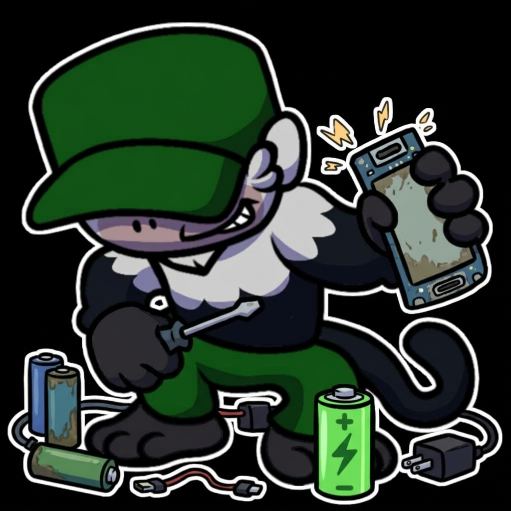
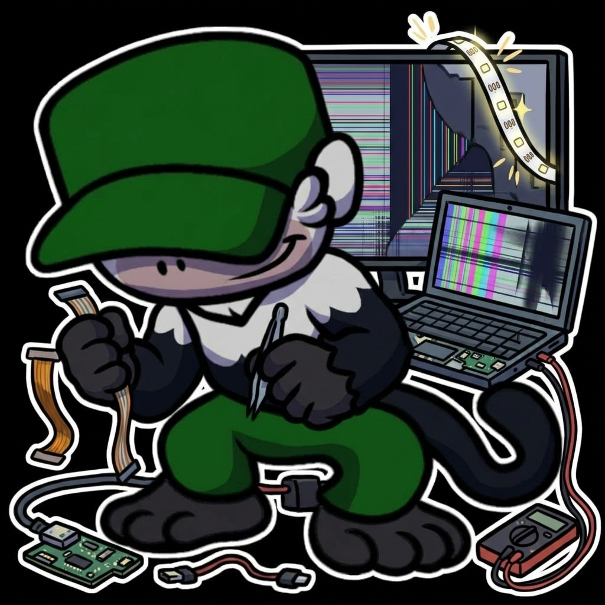
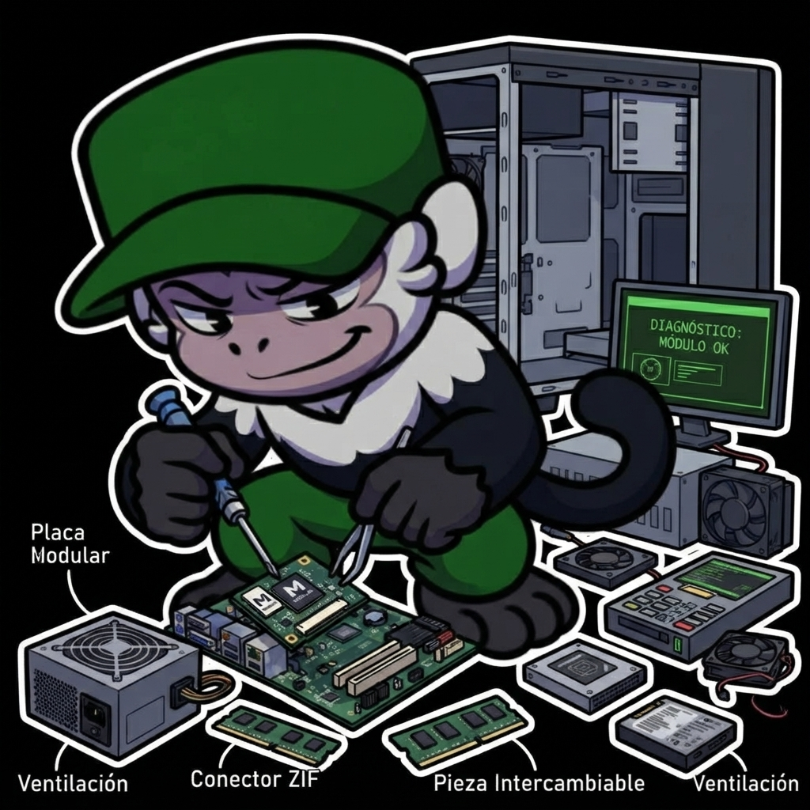

Identifica la falla real
Revisa si el problema es de batería, alimentación, conexión o pantalla antes de asumir que el equipo completo ya no sirve.
Don Peña es el reparador de herramientas y quien ayuda a Guijarro a mantener su piedra en buen estado. Aquí encuentras orientación clara sobre repuestos, diagnóstico y cómo darle una segunda vida a tus equipos.

Especialista en diagnóstico técnico, repuestos y rescate de equipos que aún tienen vida util.
Tres pasos simples para decidir si conviene reparar o cambiar una pieza.
Revisa si el problema es de batería, alimentación, conexión o pantalla antes de asumir que el equipo completo ya no sirve.
Compara el valor y disponibilidad del repuesto frente a la vida útil restante del dispositivo para tomar una decisión justa.
Una buena limpieza, temperatura controlada y piezas compatibles evitan que la misma falla se repita a los pocos meses.

Componentes clave y orientaciones para alargar la vida útil de tu tecnología.

Reemplazo de celdas agotadas, puertos desgastados y fuentes de alimentación para recuperar autonomía y estabilidad.
Consultar repuesto
Atención a fallas de imagen, líneas, retroiluminación o cables internos en pantallas, portátiles y televisores.
Consultar repuesto
Revisión de placas, conectores, ventilación y piezas intercambiables enfocadas en reparabilidad real.
Solicitar orientación